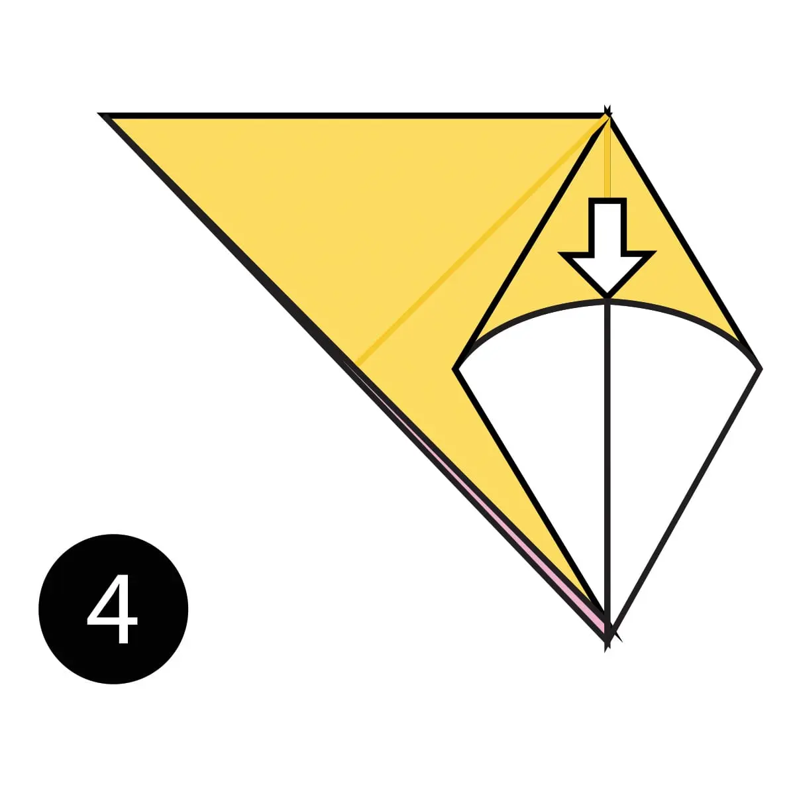

1. Fold the paper in half.

2. Fold the paper in half again.

3. Open the top flap of paper over to the right.
4. Squash fold this flap down .

5. Turn the paper over .

6. open the top flap of paper over to the left and Squash Fold it down .

7. Fold and Unfold the sides and the top along the dotted lines. You’ll use these creases in the next step .

8. Open up the top layer of paper and fold it up using the crease from the previous step .

9. Fold in both sides along the existing creases making a Petal Fold .

10. Turn the paper over .
XI11. Repeat steps 7-9 on this side .

12. Fold both sides to the centre along the dotted lines. Then repeat on the other side .

13. Inside Reverse Fold up both sides of the paper just like in a paper crane .

14. Reverse Fold the back part down to make the back legs .

15. Fold the top flap of paper down and repeat on the other side to make the front legs .

16. Reverse Fold the tip down to make the head .

17. Inside Reverse Fold the tip of the head .

18. Fold the back of the leg inside the model along the dotted line. Repeat on the other side .

19. The completed camel .